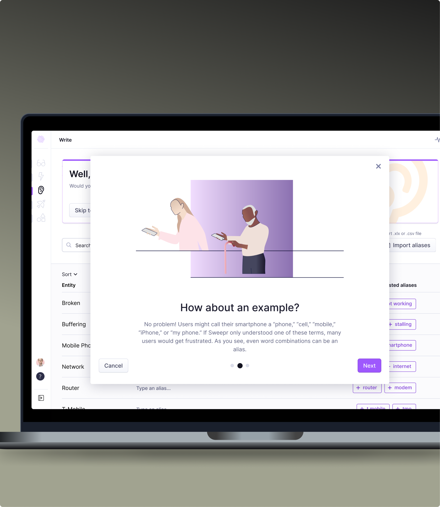
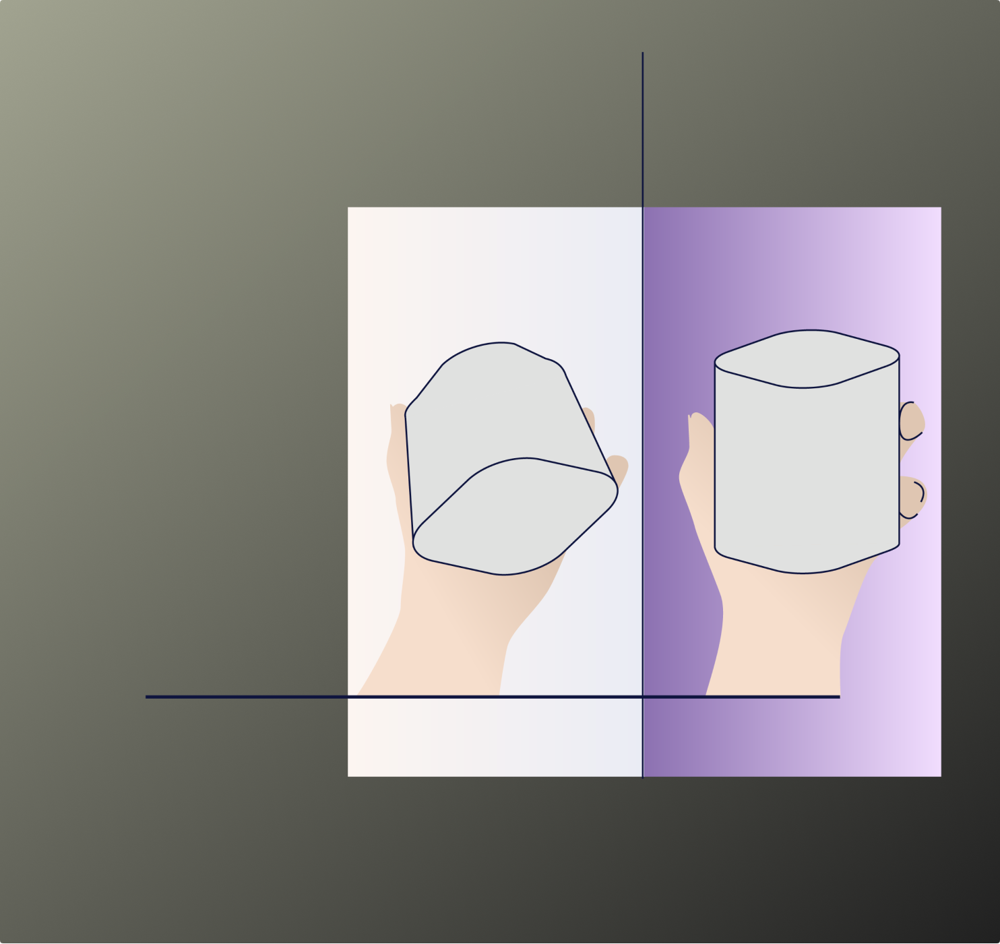
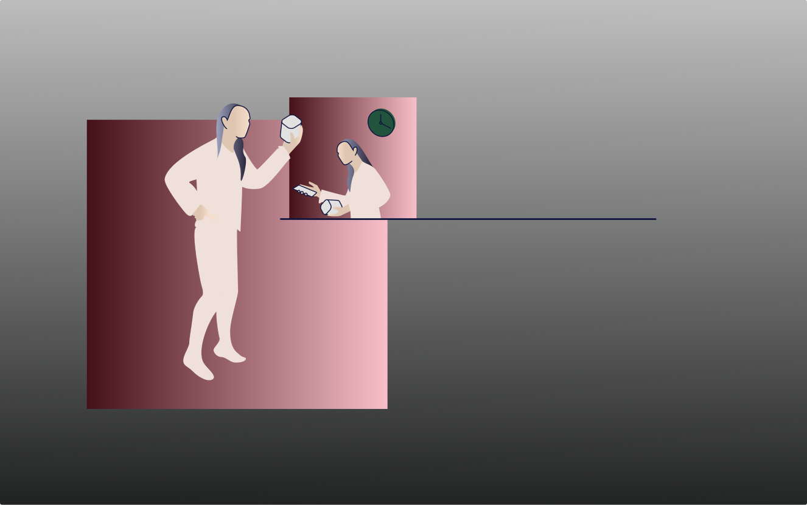
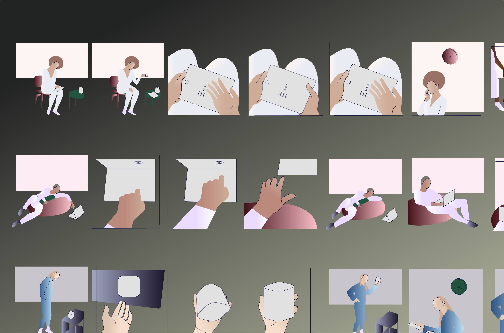
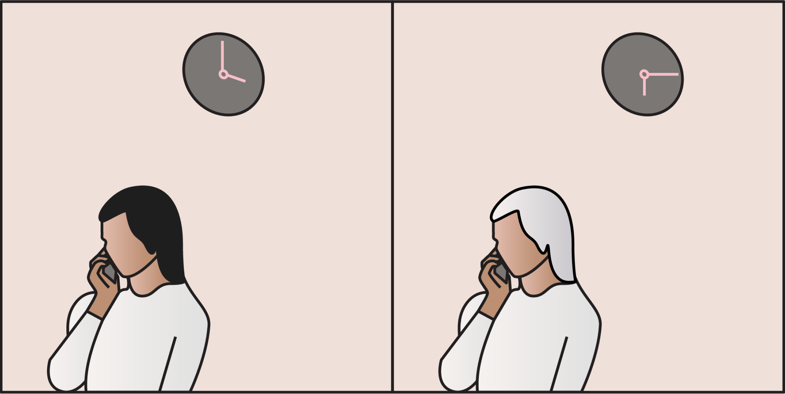
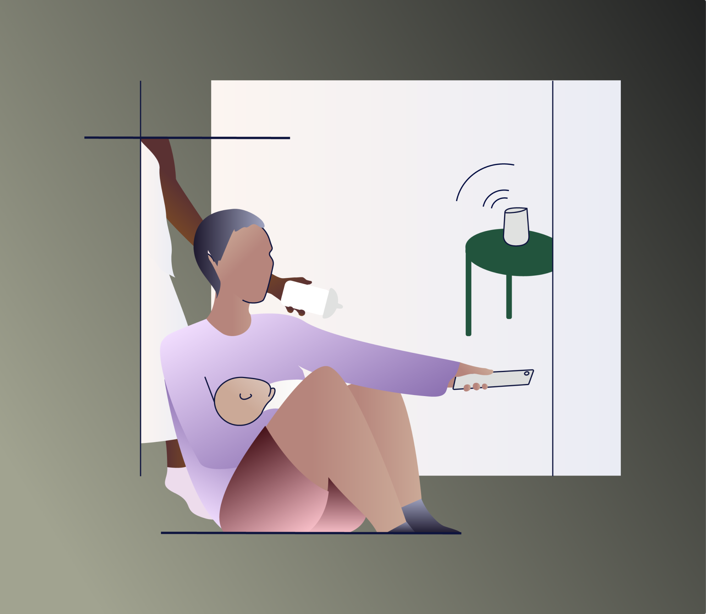
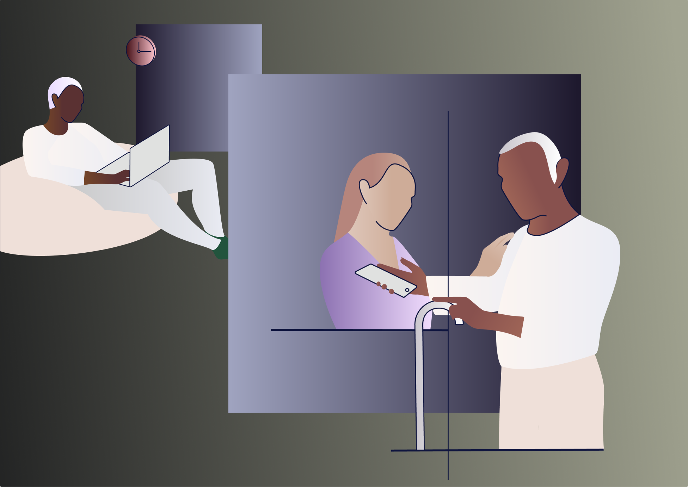

Published
Audience
From end users of the Sweepr App, to visitors on the website, to perspective clients in our marketing collatoral.
Client
Sweepr
Date
August 28th, 2020


An illustration style and system was created for Sweepr that demanded flexible, dynamic, but fresh exciting images that could be used for both product and marketing purposes. The style was formed from the company’s core function: to create “Simple Care for the Connected Home”. It was jump started from the existing company’s brand identity elements.
Sweepr illustration style
Illustration

Simplicity was drawn into the illustration style created for Sweepr. The people are drawn figuratively to depict them in an uncomplicated way, but combined with geometric planes gave this style an interesting contrast.

The figures had to function an instructive and informative, as well as emotively.

The home, and modern design was drawn on in the style, hinting at De Stijl and modernist movements, which were about stripping back and rethinking design, fully aligning with what Sweepr is about.

As well as being inspired by the modernist and De Stijl movement, I was also inspired by comic strip style, to communicate an accessible side to the fine art inspired illustration style. The comic style also hints at a storyboard, where a hero might be introduced to save the person in need. In this case, Sweepr was the hero.

Subtlety, stillness and humour played a huge role in the tone of voice of the images. They create calmness, while engaging the audience.

The vertical and horizontal lines worked for the illustrations functionally and expressively. They expressed that modern style, but also becoming essential devices to frame cropped parts of the images that were the most important to be shown. The background square shapes placed the images solidly onto whatever platform they were needed to perform in: product or print.

The full colour, skin tones, and body shapes was a choice collectively made to create a brand that everyone can see themselves in. The personalised aspect of the product is reflected in the diversity of the figures.
